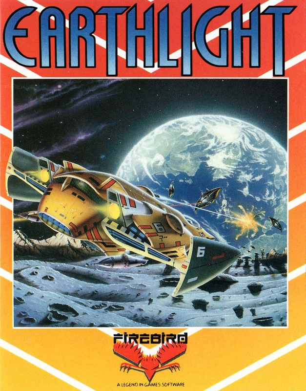
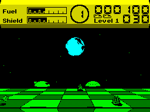
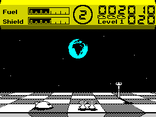
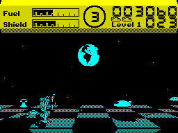
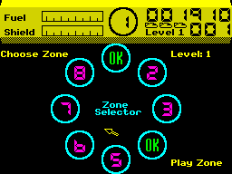

Earthlight


{kind=link}

| Publisher: | Firebird |
| Price: | £7.95 |
| Year: | 1988 |
| Source: | CRASH, Issue 53 |

Slaatn, an ordinary alien from the planet Acturian, is on a routine intergalactic garbage collecting mission. Suddenly he’s drawn off course by a strong sideways force emanating from Earth and is forced to make an unscheduled landing on the moon. Alone and friendless, Slaatn has only one chance of escape: he must neutralise the moon’s box-like transmitters and eliminate the offending force field.

completely new angle
The mission takes place over four levels, each of which is divided into eight zones to be tackled in any order. The moon’s 3-D, horizontally scrolling checker-board surface consists of a series of regular squares pitted with craters, and marked by upright obstacles. The planet earth, rotating in distant space, is clearly visible, and bathes the moon in its eerie glow.
Slaatn has managed to steal a saucer-like alien craft which begins each round perched on a hemispherical platform base. Hovering above or skimming along the moon’s surface and making use of occasional transporter platforms, Slaatn must collect a specified number of transmitters before returning to base. Alien saucers, spheres and podships do not hesitate to attack. However, Slaatn’s ship is equipped with shields, fuel and missiles. Before entering each zone, the player can alter the ratio of these supplies; opting for more fuel, for example, means a reduction in the number of missiles carried.

Collision with aliens or obstacles damages shields, and staying too long on the planet’s surface inevitably results in a loss of fuel. Should shields fail completely or fuel run, out one of three lives is lost. A status panel at the top of the screen shows shield and fuel panels — which flash when dangerously low — current zone, score, lives left, present level and missiles remaining.
Returning to base before all the transmitters have been collected gives an instant breakdown of Slaatn’s performance so far, including the number of transmitters still to collect and the number and type of aliens still alive.
Once Slaatn has cleared all the zones and returned to base he is whisked onto the next level. The more transmitters he collects the more realistic the possibility of his escape from this dark and dangerous moon becomes.
CRITICISM

“The comfortless surface of the moon bathed in a weird and eerie light is excellently portrayed in Pete Cooke’s latest game. Parallax scrolling and realistically changing shadows create a polished and professional 3-D effect. The perspective is still not fine enough to make pinpointing of a craft’s exact position possible, but on most levels the planet’s grid-like surface avoids any problems of alignment. You simply line up your own craft with the enemy’s to make sure of a direct hit. The presentation is faultless and the sound is atmospheric; a few carefully composed spot effects can be just as effective as a more complicated soundtrack. The controls of Slaatn’s craft are smooth and generally quick to respond. Adventurous aliens should find plenty to keep them occupied. Negotiating a fleet of alien podships, while trying to collect a box and avoid a dangerous, deadly obstacle as you watch your fuel counter flashing low, requires more than the average measure of intergalactic spirit. Whether you’re confident or just curious, it’s one of those games you just shouldn’t miss.”
KATI ... 90%
“Earthlight is yet another one of Pete Cooke’s masterpieces to put of your shelf, along with Tau Ceti and Academy. The game is excellently presented right from the start, and the graphics and sound (especially on the 128K) make it instantly addictive. Behind the game is a wickedly simple idea, but the way Pete has interpreted it makes it worthy of a Smash. The main scrolling area is seen in 3-D, and each level holds its own colours. But if you don’t like the ones Pete has chosen then a quick trip to the CONFIGURE GAME option allows you to change them and other aspects of the game. The controls are confusing for a while because you have to increase and decrease the height of the ship as well as go forward, backwards, left and right. But after a couple of goes it all becomes easier and you can start and collect the cubes. Earthlight is much more than eight sectors of addictiveness — buy it today.”
NICK ... 91%

“When I heard that Pete Cooke was doing a shoot ’em up I feared the worst. Was Pete Cooke finally selling out and copying other people’s ideas? Certainly not! I couldn’t have been more wrong. Earthlight (like Knight Lore and Manic Miner) can easily make claims of ‘breaking new barriers’ and having ‘innovative gameplay’ — the whole perspective of the game is so original. The basic concept of the game follows Uridium very closely — albeit from a different angle — and contains the same addictive gameplay and detailed graphics of Hewson’s space shoot ’em up. Pete Cooke has always been known for the true perspective of his games (Ski Star 2000 and Micronaut One are prime examples) but Earthlight is not only accurate it is also fast. Any old fool can fly around each zone at horrendous speeds firing aimlessly, but the real skill is knowing when to add that extra burst of speed and when to dodge the enemy or shoot it — EVERYTHING is limited and must be preserved! Mindless fools need not bother with Earthlight — it requires skill and restraint. It’ll take much time and energy but is well worth persevering with.”
PAUL ... 90%
COMMENTS
| Control keys: | Cursor, Kempston, Sinclair |
| Graphics: | Impressive 3-D effect with realistic shadows |
| Sound: | Superb 128K title tune. Good spot effects on both versions |
| Options: | Definable keys, colour/mono, sound on/ off, selectable panel colour, three quarters view off/on, border FX off/on, separate 128K version |
| General rating: | Could (hopefully) set a whole new trend in shoot ’em ups |
| Presentation: | 95% |
| Graphics: | 87% |
| Playability: | 92% |
| Addictive qualities: | 91% |
| Overall: | 90% |